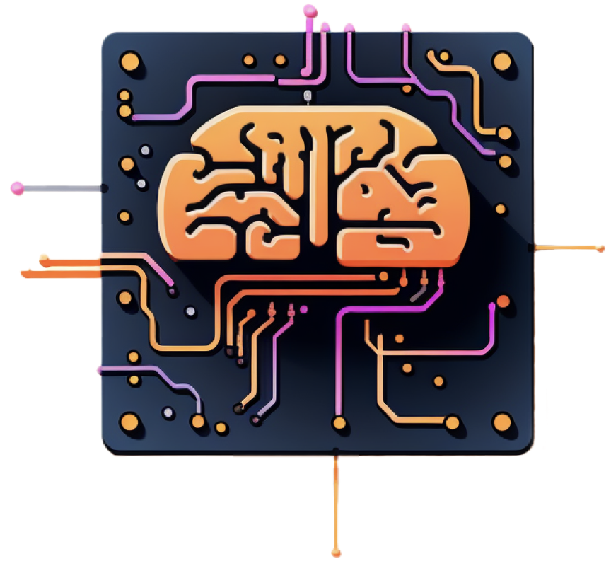
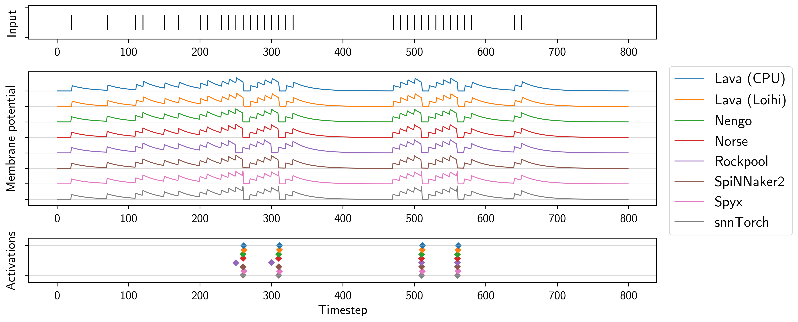
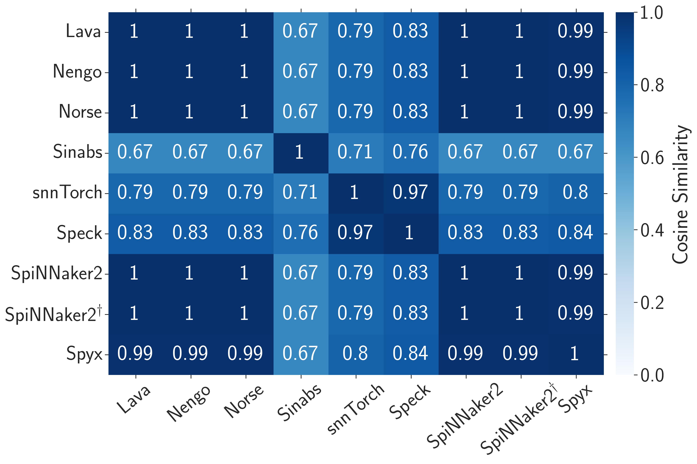
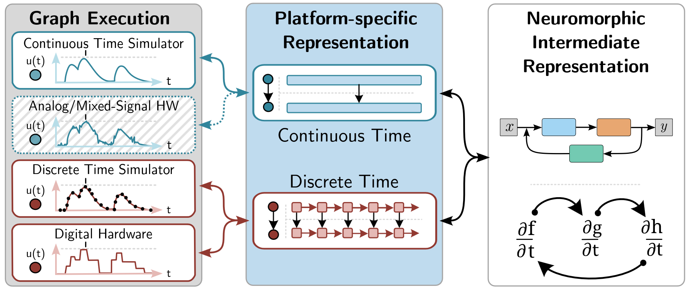
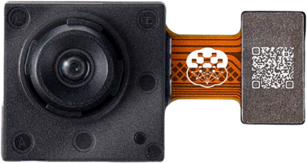
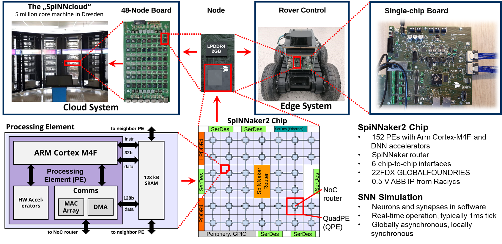

Neuromorphic Intermediate Representation
Felix Bauer (SynSense), Jens Pedersen (KTH) & Bernhard Vogginger (TU Dresden)
github.com/neuromorphs/nir
The problem
The nervous system is based on two types of communication: those which do not involve arithmetic [...] and those which do
John von Neumann, 1958
there is tremendous opportunity to engage in codesign all across the compute stack
Schuman et al., Nature Computational Science, 2022
The hardware lottery:
when a research idea wins because it is compatible with available software and hardware and not because the idea is superior
Sara Hooker, arXiv, 2020
The Neuromorphic Intermediate Representation

Reproducible computation
Neuron equations are based on idealized continuous-time models
Leaky-integrator: $\dot{v} = (v_{leak} - v) + R I$
... or not
Similarity for spiking CNN activity

- NIR reproduces ideal model
- Exposes discretization mismatch
- Allows platform-specific optimization
The NIR graph
A NIR graph
NIRGraph(
nodes = {
'x' : Input,
'li' : LI,
'thres' : Threshold,
'reset' : Linear,
'y' : Output
},
edges = [
('x' , 'li'),
('li' , 'thres'),
('thres', 'y'),
('thres', 'reset'),
('reset', 'li'),
]
)
import norse
model = norse.SequentialState(...)
graph = norse.to_nir(model, ...)
...
import sinabs
sinabs.from_nir(nir, ...)
The Neuromorphic Intermediate Representation
Demonstration
 $\to$ NIR
$\to$ NIR
NIR $\to$ Speck 
NIR $\to$ SpiNNaker2
SpiNNaker2



SCNN in py-spinnaker2
from spinnaker2 import snn
# Populations
pop_in = snn.Population(2312, neuron_model="spike_list", params=input_spikes)
pop_1 = snn.Population(4096, neuron_model="lif_conv2d", params=params_p1)
pop_2 = snn.Population(4096, neuron_model="lif_conv2d", params=params_p2)
pop_3 = snn.Population(512, neuron_model="lif_conv2d", params=params_p3)
pop_4 = snn.Population(256, neuron_model="lif_no_delay", params=params_p4)
pop_out = snn.Population(10, neuron_model="lif_no_delay", params=params_out)
# Projections
proj_1 = snn.Conv2dProjection(pop_in, pop_1, weight_1, params_proj_1)
proj_2 = snn.Conv2dProjection(pop_1, pop_2, weight_2, params_proj_2)
proj_3 = snn.Conv2dProjection(pop_2, pop_3, weight_3, params_proj_3)
proj_4 = snn.Projection(pop_3, pop_4, conn_list_proj_4)
proj_5 = snn.Projection(pop_4, pop_out, conn_list_proj_5)
# Network
net = snn.Network("SCNN")
net.add(pop_in, pop_1, pop_2, pop_3, pop_4, pop_out,
proj_1, proj_2, proj_3, proj_4, proj_5)
Neuromorphic Intermediate Representation
Felix Bauer (SynSense), Jens Pedersen (KTH) & Bernhard Vogginger (TU Dresden)
github.com/neuromorphs/nir